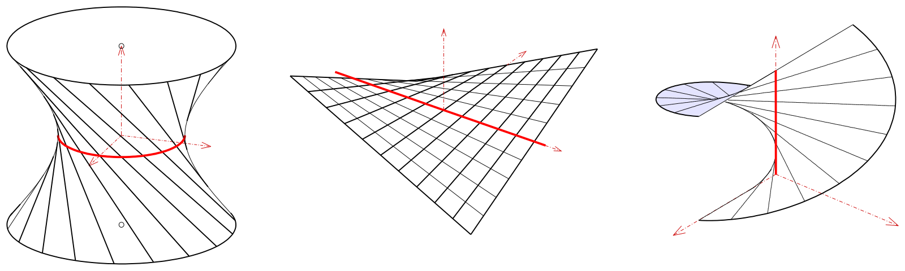

1.1 Шаблон
1.1.1 Текст и Tex формулы
Пусть задано множество \mathscr{A}, элементы которго будем называть точками. \mathscr{A} называют аффинным пространством, если для него задано векторное пространство V, называемое ассоциированным векторным пространством с аффинным пространством \mathscr{A} и отображение \to : \mathscr{A} \times \mathscr{A} \to V, сопоставляющее любым двум точкам из A, B \in \mathscr{A} некоторый вектор a \in V, обозначаемый \overrightarrow{AB}, c началом в A и концом в B, и удовлетворяющее следующим аксиомам:
- \forall A \in \mathscr{A} и \forall a \in V \ \ \ \exists ! \ B \in \mathscr{A} : \overrightarrow{AB} = a
- \forall A,B,C \in \mathscr{A} верно, что \overrightarrow{AB} + \overrightarrow{BC} = \overrightarrow{AC}
1.1.2 Стилизация текста и большие формулы
Наиболее часто определение предела функции формулируют на языке окрестностей. То, что предел функции рассматривается только в точках, предельных для области определения функции, означает, что в любой окрестности данной точки существуют точки области определения. Это позволяет говорить о стремлении аргумента функции к данной точке. При этом предельная точка области определения не обязана принадлежать самой области определения: например, можно рассматривать предел функции на концах открытого интервала, на котором определена функция (сами концы интервала в область определения не входят).
\forall { \color{orange} \varepsilon } \gt 0 \ \exists \ { \color{green} \delta } > 0 : \left[ 0 \lt \left| x - a \right| \lt { \color{green} \delta } \Rightarrow \left| f(x) - A \right| \lt { \color{orange} \varepsilon } \right] (1)
Значение A называется пределом (предельным значением) функции f(x) в точке a если для любого положительного числа \color{orange} \varepsilon можно подобрать соответствующее ему положительное число { \color{green} \delta } такое, что для всех аргументов x удовлетворяющих условию выполняется неравенство (1).
1.1.3 Изображения
Гиперболо́ид (от др.-греч. ὑπερβολή — гипербола, и εἶδος — вид, внешность) — незамкнутая центральная поверхность второго порядка в трёхмерном пространстве, задаваемая в декартовых координатах уравнением
\frac{x^2}{a^2} + \frac{y^2}{b^2} - \frac{z^2}{c^2} = 1 (однополостный гиперболоид)
Различают два вида гиперболоидов: однополостный (рис. 1) и двуполостный (рис. 2). Они представляют собой два типа из общего числа пяти основных типов поверхностей второго порядка и в пересечении со всевозможными плоскостями дают все конические сечения – эллипс, гиперболу и параболу, а также пары прямых (в случае однополостного гиперболоида). Гиперболоид неограниченно приближается к конической поверхности (т. н. асимптотическому конусу). Однополостный гиперболоид представляет собой линейчатую поверхность. В надлежащей системе координат (см. рис. 1, 2) уравнения гиперболоида имеют вид
- Линейчатая поверхность характеризуется тем, что её асимптотическая сеть ― полугеодезическая.
- Гауссова кривизна линейчатой поверхности
- Теорема Бельтрами. Линейчатую поверхность всегда можно и притом единственным образом изогнуть так, что произвольная линия на ней станет асимптотической.
- Теорема Бонне. Кроме того, если линейчатая поверхность, не являющаяся развёртывающейся, изгибается в линейчатую поверхность, то либо их образующие соответствуют друг другу, либо обе они изгибаются в квадрику, на которой сеть, соответствующая семействам образующих, ― асимптотическая.